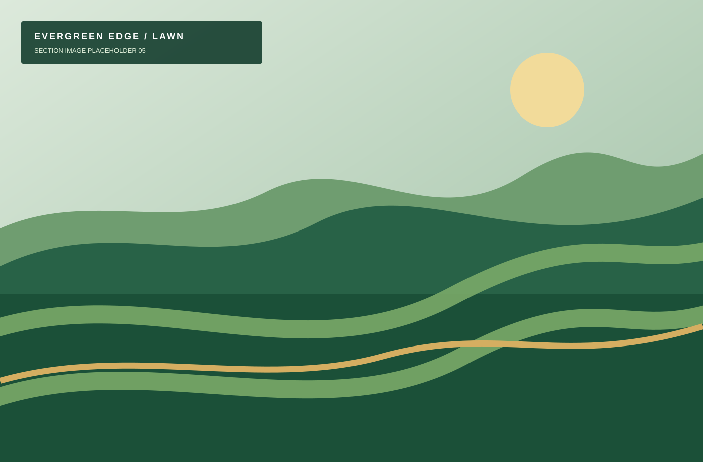
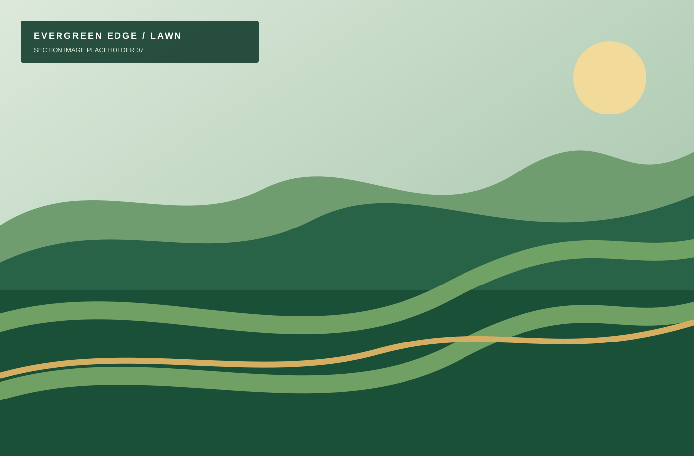
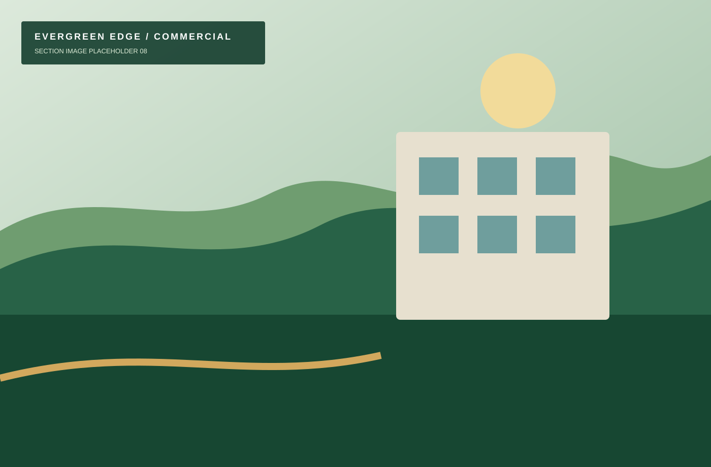

Lawn mowing
A dependable cut schedule that keeps turf neat between visits.
Explore lawn mowing
Palm Beach County lawn care done right
Keep your property healthy, clean, and professionally maintained with reliable lawn and landscaping services throughout Palm Beach County.
Practical property care
Recurring care and focused improvements, tailored to how your property is used.
A dependable cut schedule that keeps turf neat between visits.
Explore lawn mowingCrisp borders and careful trimming around obstacles.
Explore edging & trimmingThoughtful shaping that keeps plantings orderly.
Explore hedge & shrub trimmingBed cleanup and detail work for a polished property.
Explore landscape maintenanceFresh mulch for cleaner beds and better definition.
Explore mulch installationPractical debris removal after weather passes.
Explore storm cleanupTargeted turf refreshes for worn lawn areas.
Explore sod installationPredictable care and clear communication for sites.
Explore commercial groundsWhy Evergreen Edge

Residential lawn care
Recurring care, clean walkways, properly maintained shrubs, and a schedule you can count on.
Explore residential service →
Commercial grounds care
Predictable scheduling, manager communication, documentation, and multi-property coordination.
Explore commercial service →A straightforward process
Share your address and needs.
We suggest a practical scope and cadence.
Choose the services that fit your property.
We handle the routine and the details.
Recent work
Flexible care options
Most complete
Across Palm Beach County
From West Palm Beach and Wellington to Boca Raton, we maintain homes, rentals, community areas, and small commercial properties.
Customer perspectives
These illustrative testimonials are not third-party verified reviews.
Helpful answers
Yes. We provide free, practical estimates throughout Palm Beach County.
We serve West Palm Beach, Wellington, Royal Palm Beach, Lake Worth Beach, Boynton Beach, Delray Beach, Greenacres, Palm Beach Gardens, Loxahatchee, Westlake, The Acreage, Boca Raton, and nearby county locations.
Yes. Weekly service is common during active growing periods; biweekly, monthly, seasonal, and one-time options are also available.
Standard residential service does not require a confusing long-term commitment. We will explain the proposed schedule before work begins.
Yes. We maintain small commercial sites, offices, retail properties, HOA common areas, and managed communities.
Yes. We can coordinate access and provide service-completion photos when requested.
Yes. Storm debris cleanup is available based on crew capacity and site conditions.
We reschedule as conditions allow and communicate when the route changes.
Yes. Both are available as standalone improvements or alongside maintenance.
Yes. Evergreen Edge is licensed and insured.
Yes, photos are available for remote owners and managers upon request.
Timing depends on season, route availability, and the work requested. We will share the next practical opening with your estimate.
Free Palm Beach County estimates
Tell us what needs attention, and we’ll recommend a practical next step.